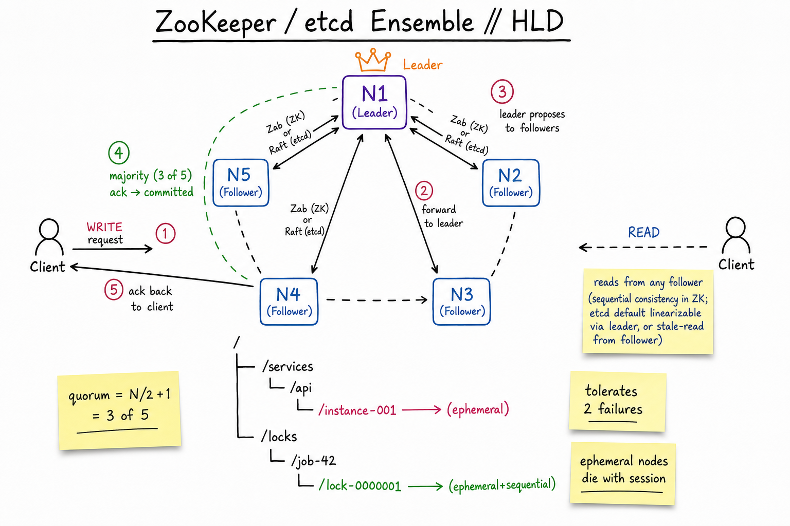
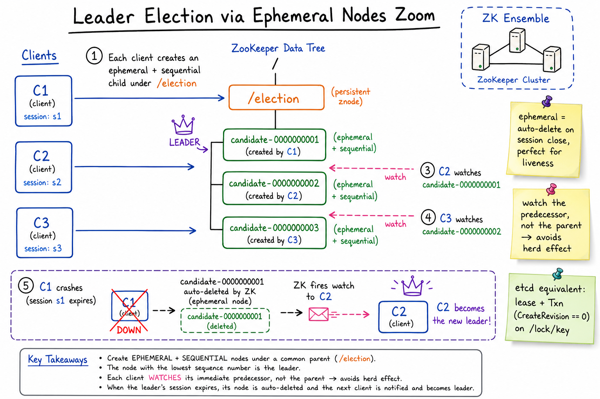

ZooKeeper / etcd // Deep Dive
Consensus-backed coordination services. They store small amounts of critical metadata — configuration, membership, leadership, leases — with strong consistency. Not general-purpose databases; they trade throughput for guarantees.

5-node ensemble: 1 leader + 4 followers. Writes funnel through the leader, replicate to a majority (3 of 5), then ack. Reads can hit any follower with sequential consistency (ZK) or be linearised via the leader (etcd default).
01 — Identity
ZooKeeper (Yahoo, 2008) and etcd (CoreOS, 2013) are the two dominant strongly-consistent coordination services. They speak the same use cases — service discovery, leader election, distributed locks, configuration, cluster membership — but differ in protocol (Zab vs Raft), API surface (znode tree vs flat key-value), and ecosystem (Java/Hadoop vs Go/Kubernetes).
Both share the same constraints: small data only (default 1MB per znode/key, total dataset comfortably in RAM <10GB), writes pay a quorum round-trip (~ms in LAN, > 100ms across regions), do not stretch across continents (use one ensemble per region + replicate externally).
The mental model: a tiny, ultra-reliable, ultra-consistent KV store that everyone in your fleet trusts to break ties.
01a — Core Concepts
| Term | Meaning |
|---|---|
| znode (ZK) | Node in a hierarchical filesystem-like tree. Each holds ≤1MB of data + stat. |
| key (etcd) | Flat KV; keys are byte strings that look like paths but ranges are first-class (get /a/ --prefix). |
| Ensemble / Cluster | 3 or 5 (or 7) nodes running the same data. Always odd. |
| Quorum | N/2 + 1. 5 nodes → quorum = 3 → tolerates 2 failures. |
| Session | Client’s TCP-backed liveness handle to the ensemble. Heartbeats keep it alive. |
| Ephemeral (ZK) | znode auto-deleted when session ends. The mechanism for liveness. |
| Lease (etcd) | Time-bound handle. Keys attached to a lease are deleted when the lease expires. Same role as ephemeral. |
| Sequential (ZK) | Flag: znode name gets a monotonically increasing counter appended. Building block for locks. |
| Watch | Client subscribes to changes on a node/key. ZK: one-shot, must re-arm. etcd: range watch, streams updates. |
| ACL | Per-node permissions. ZK has digest/IP/SASL auth; etcd has RBAC + mTLS. |
| Zab (ZK) | ZooKeeper Atomic Broadcast. Leader-based total-order broadcast protocol; predates Raft. |
| Raft (etcd) | Leader-elected log replication with explicit safety proofs. Easier to reason about than Paxos. |
01b — API / Wire Surface
ZooKeeper
create /services/api/instance-001 "10.0.1.42:8080" EPHEMERAL create /locks/job-42/lock- "" EPHEMERAL_SEQUENTIAL get /services/api/instance-001 getChildren /services/api watch=true # one-shot set /config/feature-x "enabled" version=7 # CAS by version delete /services/api/instance-001 multi [ create..., set..., delete... ] # atomic batch
etcd (v3)
etcdctl put /services/api/instance-001 10.0.1.42:8080 --lease=694d790cf3b1...
etcdctl get /services/api/ --prefix
etcdctl watch /services/api/ --prefix # streaming
etcdctl lease grant 30 # 30s TTL
etcdctl lease keep-alive 694d790cf3b1...
etcdctl txn << EOF
compares:
value("/locks/job-42") = ""
success requests:
put /locks/job-42 "client-1" --lease=694...
failure requests:
get /locks/job-42
EOF
The non-obvious contract: watches are one-shot in ZK. After fire, you must re-issue the request to re-arm — updates between fire and re-arm are silently missed. etcd’s range watch is a continuous stream with a starting revision, so no events are lost as long as compaction hasn’t passed your revision.
02 — When to Use / When NOT to Use
| Use when… | Don’t use when… |
|---|---|
| Leader election for a sharded service (one writer per shard). | You need application-data storage (use Postgres / DynamoDB / S3). |
| Service discovery / membership (who’s alive right now). | You need high write throughput — ZK/etcd top out ~10k writes/s per ensemble. |
Distributed locks & semaphores (Curator recipes / etcd concurrency). | Data exceeds ~few GB total or any value > 1MB. |
| Cluster config that everyone reads but rarely writes. | Globally distributed coordination — consensus over WAN is painful (use one per region). |
| Storing Kubernetes cluster state (etcd is K8s’ backing store). | You want eventual consistency & multi-master — pick Cassandra or Consul (AP). |
03 — Architecture
Write path (both)
(term, index) (Raft) or zxid (Zab).Read path differences
- ZooKeeper: reads from any server, returns local view. Provides sequential consistency: a single client sees writes in order, but two clients may read different recent values. Use
sync()before a critical read to force linearisability. - etcd: linearisable reads by default (read goes through leader, leader confirms it’s still leader). Set
--consistency=sfor cheaper serialisable reads from any follower (stale OK).
04 — Zab vs Raft (briefly)
| Zab (ZooKeeper) | Raft (etcd) | |
|---|---|---|
| Year | 2007 paper | 2014 paper |
| Leader | One at a time; chosen by epoch (highest zxid wins) | One at a time; chosen by term (random election timeout) |
| Phases | Discovery → Synchronization → Broadcast | Leader election → Log replication |
| Log | Sequence of zxids (epoch, counter) | Sequence of (term, index) entries |
| Safety | Primary-order broadcast; equivalent to Paxos in practice | Explicitly proven; designed for understandability |
Practically: both give you the same guarantees — linearisable writes through a single leader, majority quorum, automatic failover. Treat them as interchangeable unless you’re writing one.
05 — Why Odd-Number Ensembles?
Nodes (N) Quorum Tolerates failures
3 2 1
4 3 1 ← same as 3, but more replication cost
5 3 2
6 4 2 ← same as 5
7 4 3
Adding an even node gives you more replication overhead but does not raise fault tolerance. 5 nodes is the typical sweet spot for production (survives 2 simultaneous failures, including the leader during a rolling upgrade).
Going above 7 makes writes slower (more replicas to ack) without much fault-tolerance benefit. For huge read fan-out, ZK supports observers — non-voting replicas that receive committed log but don’t count toward quorum. etcd has learners for the same purpose.
06 — Ephemeral Nodes / Leases — The Liveness Primitive
Both systems give you a way to say “this key exists only while I’m alive.” That’s the foundation of every higher pattern (service registry, lock, leadership).
ZooKeeper ephemeral node
- Created with the
EPHEMERALflag. - Owned by the client’s session. Session = TCP-backed heartbeat (default timeout 6–60s).
- When session ends — client crash, network partition exceeds session timeout, explicit close — the node is automatically deleted by the ensemble.
- Other clients watching the parent see a delete event.
etcd lease
- Client grants a lease with TTL (e.g. 30s).
- Client must
KeepAlivebefore TTL elapses, or the lease expires. - All keys attached to the lease are deleted when it expires.
- Other clients watching the prefix see delete events.
Service registry pattern
# On instance startup:
zk.create("/services/api/instance-" + hostname, addr, EPHEMERAL)
# Discovery (any client):
children = zk.getChildren("/services/api", watch=true)
# Re-fetch on every change event.
When the instance crashes, its znode evaporates without any explicit deregister call. This is the magic ingredient that makes ZK/etcd-based discovery self-healing.
07 — Watches
| ZooKeeper | etcd | |
|---|---|---|
| Granularity | Per znode (data or children) | Per key or range / prefix |
| Semantics | One-shot. Must re-arm. | Streaming. Continuous events with revisions. |
| Missed events? | Possible between fire & re-arm | None, as long as starting revision > compaction point |
| Server load | Higher (re-arm storms) | Lower (long-lived gRPC stream) |
Don’t treat ZK watches as a message bus. They’re a hint to go read the latest state. The actual data on the znode is the source of truth; the watch is just “something changed.”
08 — Distributed Locks (Recipes)
ZooKeeper (Curator InterProcessMutex)
1. create /locks/my-lock/lock- EPHEMERAL_SEQUENTIAL → lock-0000000005 2. getChildren /locks/my-lock → sort by sequence 3. If you are the lowest (lock-0000000005 = lowest): you hold the lock. 4. Else watch the node immediately before yours (lock-0000000004). 5. When that watch fires, repeat from step 2. 6. To release: delete your own node. Ephemeral handles crash-release.
etcd (concurrency package)
session, _ := concurrency.NewSession(client, concurrency.WithTTL(30)) mu := concurrency.NewMutex(session, "/locks/my-lock") mu.Lock(ctx) defer mu.Unlock(ctx) # Internally: creates a key under /locks/my-lock/<revision> # attached to the session's lease. Waits until it's the # lowest revision under that prefix.
The fencing-token caveat. A network partition can cause a client to believe it holds the lock while its session has expired and someone else has taken over. Always pair the lock with a fencing token (e.g. the zxid / revision at lock acquisition) and have the protected resource reject stale tokens. ZK/etcd locks alone are not safe against process pauses — see Martin Kleppmann’s “How to do distributed locking.”

Each candidate creates an ephemeral+sequential child under /election. The lowest sequence wins. Each non-leader watches its predecessor (not the parent) to avoid the thundering-herd problem.
09 — Leader Election
Same recipe as the lock, with one extra detail: each candidate watches only its immediate predecessor in the sequence, not the parent. If everyone watched the parent, a leader crash would fire watches on N candidates — the herd. With predecessor-watch, exactly one watch fires; everyone else just shuffles up the queue.
candidate-0000000001 <- leader (lowest) candidate-0000000002 watches 0000000001 candidate-0000000003 watches 0000000002 candidate-0000000004 watches 0000000003 leader crashes → ephemeral 0000000001 auto-deleted → ZK fires watch ONLY on candidate-0000000002 → 0000000002 re-reads children, finds itself lowest, takes leadership.
etcd Election API
election := concurrency.NewElection(session, "/leader") election.Campaign(ctx, "instance-A") # blocks until leader // you are leader <-ctx.Done() election.Resign(ctx)
etcd’s Election.Campaign implements the same predecessor-watch logic under the hood. The session’s lease handles crash-release.
10 — What Happens on Quorum Loss
If 3 of 5 nodes are unreachable to each other (network partition isolates 3 vs 2):
- The minority (2 nodes) cannot accept writes. They have no quorum. Reads continue but become stale.
- The majority (3 nodes) continues normally; if the partition contained the old leader, a new leader is elected within seconds.
- Clients connected to the minority block on writes (timeouts) and either fail over to another member or fail the request.
ZooKeeper: minority enters a special read-only mode if configured (readOnlyMode.enabled=true); otherwise refuses everything until quorum returns.
etcd: minority returns ErrNoLeader/ErrTimeout on writes. Reads return stale data if the caller allows.
This is the CP in CAP. Both products choose consistency over availability. If you want AP, use Consul (Raft for KV but optional Eureka-style AP discovery) or Cassandra-backed config.
11 — etcd in Kubernetes
etcd is the only persistent store of a Kubernetes cluster. Everything (Pods, Services, Secrets, ConfigMaps, leader-election leases, RBAC) is a key under /registry/<resource>/<ns>/<name>. The apiserver is the only client; controllers go through it.
- K8s scale ceiling is largely an etcd ceiling: 5k nodes / 150k pods needs a tuned 5-node etcd on NVMe.
- Loss of etcd quorum = the cluster control plane is read-only; running workloads stay up but you can’t change anything.
- Backups:
etcdctl snapshot saveto S3 every 15–30 min. Without these, a corruption is fatal.
Pre-1.20, K8s also stored events in etcd — flooded ensembles in big clusters. Since then, events go to a separate etcd or are dropped after TTL.
12 — Operational Concerns
| Knob | Sweet spot | Why |
|---|---|---|
| Ensemble size | 5 | Tolerates 2 failures; quorum-write latency tolerable. |
| Disk | NVMe SSD with low fsync latency | Every commit fsyncs the log. HDD → fsync = 10ms → throughput < 100 writes/s. |
| Network | Same DC, < 1ms RTT between members | Cross-AZ OK; cross-region painful. |
| Heartbeat | ZK tickTime=2000; etcd --heartbeat-interval=100 | Too short = false failover; too long = slow detection. |
| Snapshot | Compact + snapshot at >100MB log growth | Without compaction, log replays grow linearly → long recovery. |
| Watch fan-out | Limit < ~50K watches per member | Each delivery is a network write — can saturate during cluster events. |
The classic outage: someone stuffs application data into ZK (a binary blob per request, >1MB each, millions of znodes) thinking “it’s reliable.” The ensemble blows up — snapshot times balloon, heartbeats stall, every service that depends on it (Kafka pre-KRaft, HBase, every consumer…) goes red. ZK/etcd is not a database.
13 — Usage Patterns (back to A cheatsheets)
- Job Scheduler — shard ownership: workers contend for
/shards/<id>/ownerephemeral nodes; the survivor processes that shard. - Web Crawler — frontier worker locks per domain to enforce politeness; ephemeral so a crashed worker releases its domains.
- Uber driver registration — service registry: each driver gateway registers under
/gateways/<region>/. - Google Docs — doc-actor leader election so exactly one OT/CRDT process owns a document at a time.
- Kafka pre-KRaft — controller election, broker membership, topic metadata, consumer group offsets (until 0.9) all lived in ZK.
- Kubernetes — entire control plane state.
14 — Alternatives
| Alternative | When to pick |
|---|---|
| Consul (HashiCorp) | Raft-backed KV, plus first-class service discovery + DNS interface + health checks. Heavier than etcd; lighter than ZK ecosystem. Multi-DC built-in. |
| Eureka (Netflix) | AP, not CP. Optimised for service discovery at huge scale where stale-but-up is better than fresh-but-blocking. Discovery only; no KV. |
| HashiCorp Nomad | Uses its own Raft cluster for scheduling. Mention only if you’re explaining the broader HashiCorp stack. |
| DynamoDB / Spanner | If you only need an atomic CAS for leader leases and you’re already on the cloud DB, you don’t need a coordination service at all. |
| Kafka KRaft | Kafka’s own embedded Raft replaces ZK as of 3.x. Same idea internalised. |
| Apache Curator (ZK) | Not an alternative — a wrapper library with battle-tested recipes (locks, election, queues, caches) on top of ZK. Always use it; raw ZK API is too easy to misuse. |
15 — Interview Q&A
Why an odd number of nodes?
Fault tolerance is (N-1)/2. 3 nodes → tolerate 1; 4 nodes → still tolerate 1 (because quorum jumps to 3); 5 nodes → tolerate 2. Even sizes pay extra replication cost without improving fault tolerance. 5 is the production sweet spot — tolerates 2 simultaneous losses, which covers rolling upgrades + 1 surprise failure.
How does an ephemeral node make leader election self-healing?
The leader holds an ephemeral znode (or etcd lease) tied to its session. If the leader crashes, hangs, or is partitioned beyond the session timeout, the ensemble deletes the node automatically — no explicit deregister required. Other candidates watching that znode get a delete event, contend, and one wins. The protocol works without trust in the dying leader.
Why do candidates watch their predecessor instead of the parent?
To avoid the thundering herd. If 1000 candidates all watch /election, every leader change fires 1000 watches — massive load on the ensemble. With predecessor-watch, a single leader change fires exactly one watch (the one client whose predecessor died). Promotion is a simple “re-read children, am I now lowest?” check.
Are ZooKeeper locks safe against process pauses?
No, not on their own. A long GC pause can exceed the session timeout: ensemble revokes your ephemeral node and grants the lock to another client; meanwhile you wake up still believing you hold it. The fix is a fencing token — the zxid (or etcd revision) at acquisition. The protected resource (DB, storage system) tracks the highest token it’s seen and rejects writes from older tokens. See Kleppmann’s “How to do distributed locking.”
ZK watches vs etcd watches?
ZK watches are one-shot: fire once, must re-arm by re-issuing the read. Updates between fire and re-arm are missed. etcd watches are streaming: a long-lived gRPC stream tied to a starting revision; the server delivers every event since that revision (unless it’s been compacted). For high-churn keys, etcd is much easier to use correctly.
What happens during a network partition?
The minority side has no quorum → rejects writes (returns NotLeader / SessionExpired) and serves stale reads only. The majority side keeps going; if the old leader was on the minority, a new leader is elected. Both products are CP — they prefer to be wrong-and-unavailable rather than split-brain. When the partition heals, the minority replays the log to catch up.
Why is “don’t store data here” the most-repeated rule?
Every write costs a quorum round-trip + fsync; every read either crosses the network (linearisable) or returns stale (sequential). The dataset is in RAM and snapshotted; size is capped (effectively low GBs). Top throughput is ~10k writes/s per ensemble. Misuse it as a queue or key-value store and you bottleneck every other consumer of the ensemble — Kafka, K8s, your discovery layer — on a service that wasn’t built for that load.
How does Kafka use ZooKeeper (or now KRaft)?
Pre-KRaft: brokers register ephemeral znodes for membership, ZK runs controller election, partition leader assignments and ISR live in znodes, topic metadata is cached client-side. ZK was the bottleneck at ~500K partitions. KRaft replaces this with an internal Raft group inside the brokers, storing metadata in a special __cluster_metadata topic — same model, no external dependency, 10x more partitions.
etcd vs ZooKeeper — which would you pick today?
For greenfield, etcd: gRPC API, range watches, smaller surface, better Go ecosystem, MVCC + transactions, ubiquitous because of Kubernetes. Pick ZooKeeper if you’re in the Java/Hadoop ecosystem (HBase, Solr, Druid still depend on it) or if your team has deep Curator expertise. The architectural choice is mostly ecosystem-driven now.
Why is sequential consistency “weaker” than linearisability?
Linearisability: every operation appears to take effect at a single instant between its invocation and response — global real-time order. Sequential consistency: each client sees its own operations in order, but two clients may disagree on the global order of unrelated operations. ZK gives sequential by default (cheap follower reads); use sync() before a critical read or accept etcd’s linearisable default (leader round-trip).
How big is too big for ZK/etcd?
Operationally healthy: dataset < ~1–2GB, watches < 50K, writes < 1k/s steady state. Above ~8GB or 100k+ watches, snapshot times become minutes, memory pressure grows, and unfortunate things start happening on heartbeat. If you’re approaching those numbers, you’re using it wrong — offload the bulk of your data to a real database and keep only coordination metadata here.
SDE-2 vs SDE-3 differentiation?
| SDE-2 | SDE-3 |
|---|---|
| Knows it’s “for coordination”, ephemeral nodes, leader election | + Zab vs Raft phases, quorum math & even-vs-odd, predecessor-watch herd avoidance, fencing tokens for safe locks, watch semantics (one-shot vs streaming), CP behaviour under partition, why it’s not a database (latency / size / fsync), K8s + Kafka coupling, observers / learners for read fan-out |